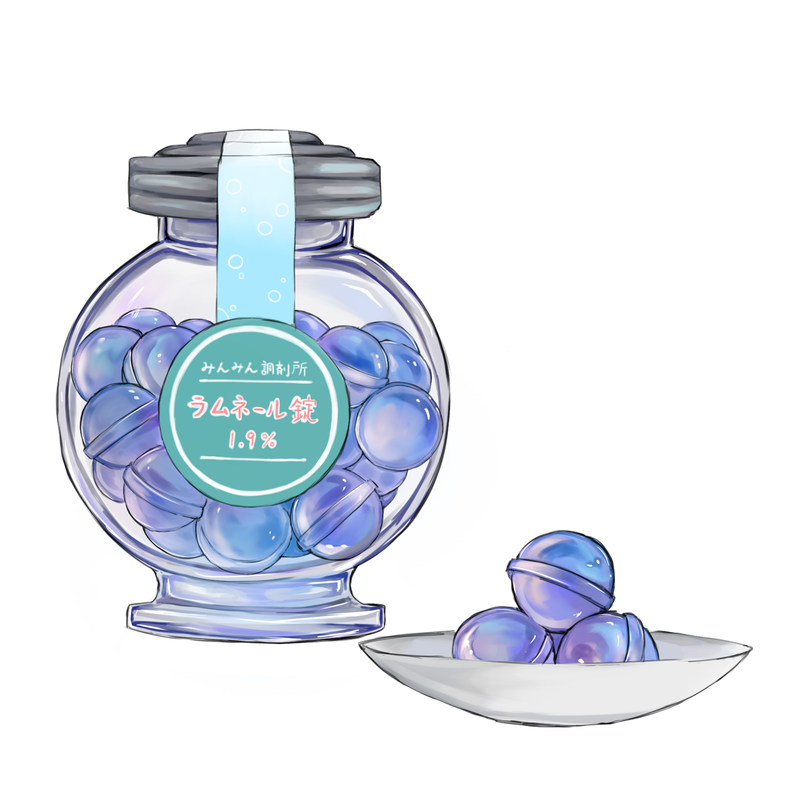

ラムネール錠 1.9%

【効果・効能】
微炭酸の弾ける刺激と爽快な清涼感が、
夏の暑さでぼんやりした心身を一瞬で目覚めさせます。
ラムネの甘さや瓶のビー玉の音が「あの夏の日」の記憶を呼び覚まし、
懐かしさと胸のきゅんとするノスタルジーを届けます。
渇いた喉を潤しながら、日々のストレスから心を解き放ちます。
【成分】
・ガラス瓶
・ビー玉
・炭酸ガス
・砂糖
【服用時点】
シュワっと爽快になりたい夏の夜
【副作用】
・まれにお腹が張ることがあります
・冷蔵保存方法を誤ると、服用時に口の中で弾けることがあります
【生産地】
トウキョウ
【製造会社名】
みんみん調剤所
製造者からひとこと
子供の頃、私にとってラムネや綺麗なビー玉は
簡単には手に入らない「夏の憧れ」でした。
小学生になって初めて買ってもらった時、ワクワクしながら開けようとしたものの、
なかなかうまく開けられずに手伝ってもらったことは良い思い出です。
成長したいまは、飲みたくなったら自分で購入し、
開ける時は自分の手でカチッと開けることができます。
この薬は、そんな小さな成長の奇跡と、あの頃抱いた憧れを詰め込んだものです。
ラムネを開ける時の緊張感と爽快感を届けたくて作りました。